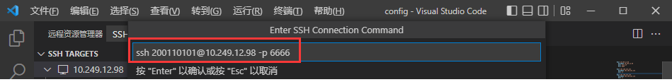
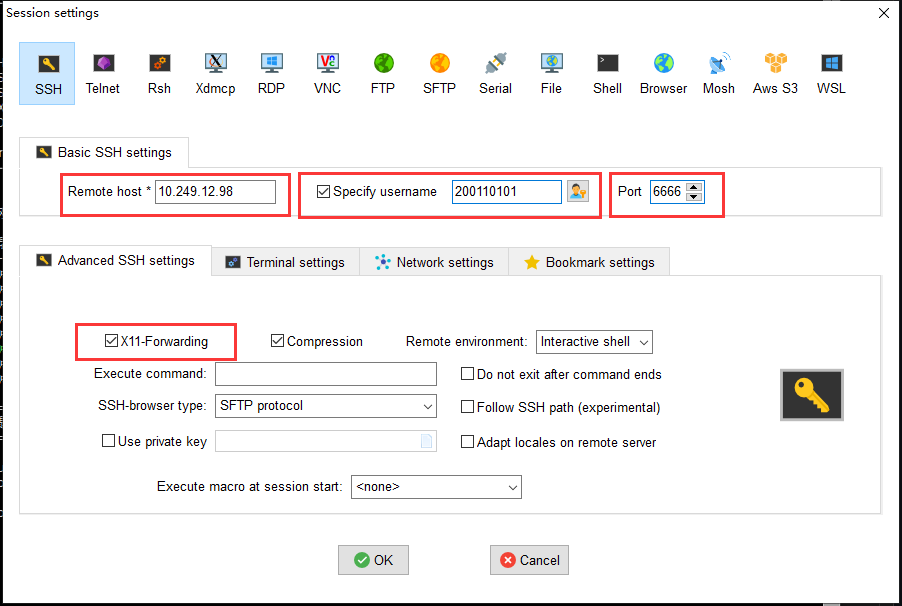

附录1：远程平台使用指南
Warning
严禁使用远程实验环境做与教学无关事宜，杜绝使用公共资源挖矿等，一经发现将严肃处理，感谢配合！
1. 速查信息
远程实验平台IP地址： 10.249.12.98 ，端口号： 6666
Info
用户名和初始密码都是 你的学号 ，出于安全考虑，建议你初次登录后修改初始密码。
远程实验平台共有8个计算节点，每一个计算节点都提供相同的服务，可能你每次登录的计算节点会不一样，但无须担心，你看到的文件都是一样的。
2. 快速入门
2.1 环境准备
需要配合远程实验平台使用的软件：
- Visual Studio Code
- MobaXterm
2.2 使用VS Code
2.2.1 安装VS Code
打开VS Code官网，点击Download for Windows按钮下载安装包，然后双击安装包完成安装。你可以从开始菜单找到新安装上的VS Code。
2.2.2 将VS Code连接到实验平台
打开VS Code，点击左侧的扩展(extension)按钮，在搜索框中键入remote ssh，点击Remote - SSH插件并安装，如下图所示。
左侧边栏将出现此图标：。点击这个图标，选择SSH TARGETS右侧的+号，如下图所示。
这会在屏幕上方中央弹出输入框，要求输入ssh指令。在这里输入ssh 你的学号@计算节点IP -p 6666，例如ssh 200110101@10.249.12.98 -p 6666就是学号为200110101的同学链接到远程实验平台，端口号为6666。

输入完成后，按下回车。如果弹出下图所示的界面，则再次按下回车：

现在，SSH Target添加成功，左侧SSH Target中应该增加了一栏。将鼠标移上去，点击这一栏右侧的小图标：

这会打开一个新的VS Code窗口。新打开的窗口会要求你选择目标机器的平台，选择Linux，按下回车：

如果如下图所示要求你确认是否连接，则再次按下回车：

接下来，它会要求你输入密码。初始密码即学号。

最后一次按下回车。如果没有更多提示，左下角显示SSH: 实验平台的IP地址，说明连接成功。

现在，点击下方的“终端”按钮，打开终端：

出于安全考虑，我们首先修改默认密码。点击打开终端，键入passwd并回车。
此时，它会要求你输入旧密码。旧密码（即默认密码）为你的学号。完成后回车。随后，它会要求你输入新密码，并进行确认。

注意事项 
如果VSCode出现bad owner or permission报错，解决方法可参考《Win10下Bad owner or permissions on .ssh/config的解决办法-腾讯云》。
2.3 下载trace测试包
接下来，我们将cdp-tests测试源码包复制到自己的工作空间。
参考上一节，在终端中执行相应的git clone命令下载测试框架。
你应该会看到这样的输出：
1|Cloning into 'cdp-tests'...
2|done.
这代表你已经将cdp-tests的副本下载到自己的工作空间了。
你可以点击左侧边栏最上面的按钮，并打开文件夹：
在弹出的菜单中，选择cdp-tests，并按下“确认”：

再次输入密码，按下回车确认，并信任作者。
你初步完成了对工作区的设置。接下来，我们可以测试cdp-tests能否编译。 如果下方未显示终端，点击菜单栏的查看->终端，或使用快捷键Ctrl+``` （注意：不是单引号，而是键盘左上角的那个按键）打开终端界面。
在新弹出的终端中，输入make命令，如下图所示。
此时，提示top模块有错误，这时你就可以在mycpu目录下添加你自己的CPU代码了，详见测试框架说明。

2.4 使用MobaXterm
2.4.1 SSH登录
MobaXterm 是一款远程控制工具，支持创建SSH、Telnet、Rsh、Xdmc、RDP、VNC、FTP、 SFTP、串口(Serial COM)、本地Shell、Mosh、Aws、WSL(微软子系统)等超多连接功能。MobaXterm 提供了人性化的操作界面，支持与主流的操作系统连接进行控制和管理操作，功能十分强大。
打开MobaXterm，单击打开位于左上角的工具Session，选择New sessions打开新建窗口，选择SSH，输入远程服务器的IP地址、登陆用户名及端口（ 端口号：6666 ），点击OK。
在弹出的对话框中，选择SSH。
SSH配置信息如下：

输入密码：

进入终端。
2.4.2 FTP文件传输
SSH远程登录完毕，双击左下角的Sftp，就出现了远程服务器的文件目录。

接下来在可以点击按钮Upload to current folder或者Download selected files，在Windows系统和远程实验平台之间上传或下载文件。
注意事项
使用完毕后，需在MobaXterm中输入exit命令退出！
3. 一些进阶指引
3.1 使用ssh密钥快捷认证
有没有感觉每次都要输入密码非常麻烦？ssh密钥可以让认证流程自动化，大大解放双手。在 本地 Windows下，以管理员身份打开CMD，输入ssh-keygen。
跟随指引，一路回车，便可完成ssh密钥的生成。请务必保存好自己的私钥，不要泄露！

接下来，我们将私钥加入到自己的身份认证中。在终端继续输入：
1|ssh-add 你的私钥的完整路径
2|# 例如，如上图所示，我应该键入ssh-add C:\Users\willson\.ssh\id_rsa_priv_20210909
在你的Windows上将公钥文件打开（用你喜欢的纯文本编辑器，比如记事本或者VS Code），复制其中的内容。
最后，登录你想要快捷认证的计算节点的终端，并执行下面的命令：
1|mkdir -p ~/.ssh
2|vi ~/.ssh/authorized_keys
这会打开一个文件编辑界面。按下i按键，进入编辑模式，并粘贴到上面节点终端中编辑界面的一个新行里。按下Esc，按下:wq可保存并退出。如果不放心，可以cat ~/.ssh/authorized_keys并检查输出和你刚才贴进去的是不是一样的。
配置完成后，下次你从Windows登陆时，应该就无需密码认证了。
3.2 VS Code：进阶使用
有没有怀念VS Code、CodeBlock等IDE中便捷的一键运行功能？没关系，完备的插件市场配合自动化脚本可以完成你的一切功能需求！ 下略。感兴趣的话可以了解一下Intelli Sense、MakeFile以及VSCode中的Task。
4. Q&A
4.1 我不是Windows 10系统，这会带来什么问题吗？
4.1.1 我在使用Linux/macOS？
Visual Studio Code也有Linux版和macOS版，具体操作大同小异，毕竟环境主要在服务器上。
4.1.2 我正在使用旧的Windows版本/我没有更新我的Windows 10系统？
请更新你的系统。使用过时的系统有各种各样的风险，其中最大的是与时代脱轨。
4.1.3 我正在使用Windows 11？
此教程完全兼容Windows 11。
4.2 我输入的所有命令看起来都是对的，但是为什么运行失败了？
确保你输入的是正常的半角英文字符与英文标点符号，如图所示：

这可以通过一起按下shift+空格，或者切换到英文输入法解决。
永远不要在中文输入法下输入命令！